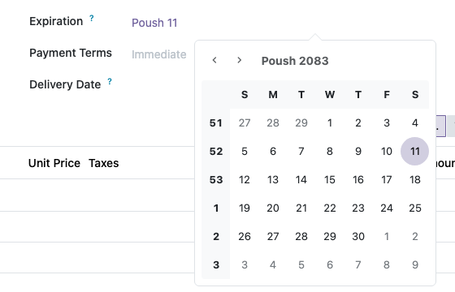
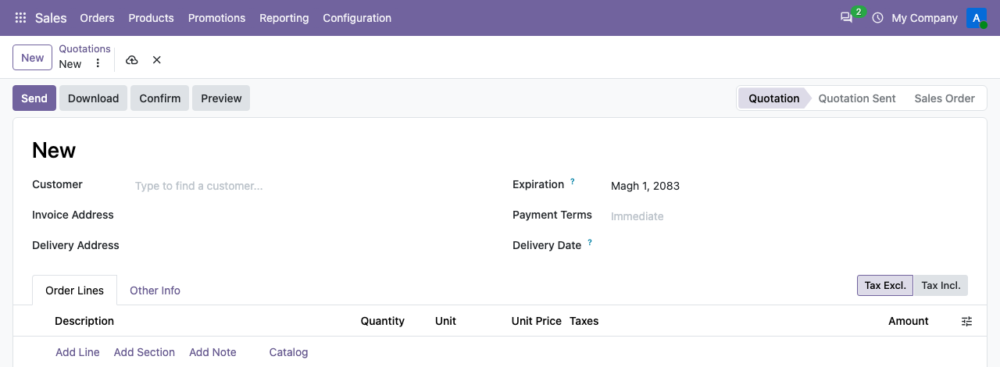
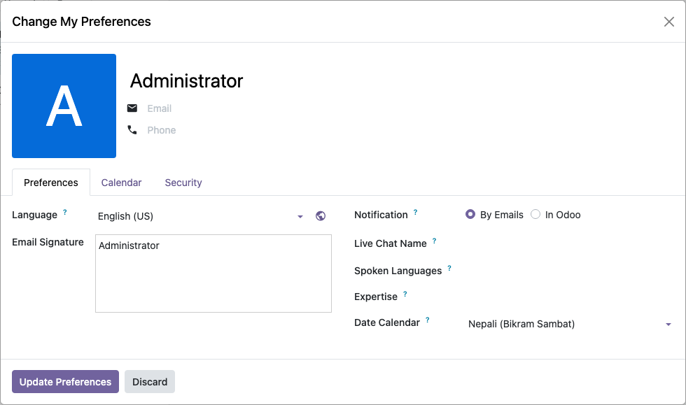

Users in Nepal work with the Bikram Sambat (BS) calendar, while Odoo only shows Gregorian (AD) dates. With this app each user chooses the calendar they want: BS users see every date in BS, type BS dates, and get a BS calendar in the date picker. Dates are still stored in the Gregorian calendar, so reports, filters, accounting and the other apps keep working unchanged.
The picker shows BS months with their real lengths (29 to 32 days), and moves by BS month, year and decade. The selected day is saved as the matching Gregorian date.

Date and datetime fields show BS dates, such as "Magh 1, 2083". You can also type them: 2083-10-01, 2083/10/1, 20831001 and Devanagari digits are all understood.

Each user picks Date Calendar in Preferences: Gregorian (AD) or Nepali (Bikram Sambat). Administrators can also set it on the user form, next to the timezone.
